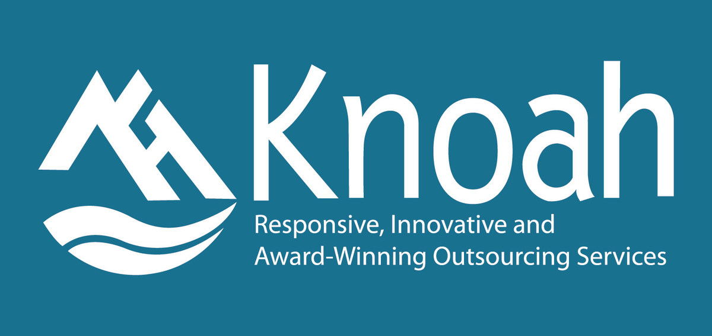

about
Accomplished experienced software developer, proficient in a wide range of technologies and skilled at delivering solutions for diverse clients.
A collaborative team player and effective leader, you thrive under pressure, consistently demonstrating resilience and the ability to drive projects to successful completion.

I have successfully developed and integrated financial software systems using diverse programming languages, frameworks, and databases to deliver scalable and efficient solutions.
My work includes building robust native and cloud-based applications for credit card and consumer banking operations, developing RESTful APIs, and creating CI/CD pipelines to ensure seamless deployments.
I have a strong focus on optimizing system performance,
ensuring data security, and collaborating with cross-functional teams to align solutions with business goals. Additionally, I actively contribute to innovation by participating in hackathons and staying updated with emerging technologies to drive transformative advancements.
My ability to resolve complex technical challenges and streamline processes through automation reflects my commitment to operational excellence and continuous improvement.

With a strong focus on delivering seamless integrations, I have designed and deployed RESTful APIs while developing scalable Java methods to ensure optimal system performance.
My expertise includes managing and optimizing databases like SQL, PostgreSQL, and MongoDB, as well as leveraging cloud platforms such as AWS or Azure to deploy and scale applications for high availability.
I have successfully delivered end-to-end solutions by integrating third-party services and internal systems, collaborating within Agile/Scrum teams to ensure timely and high-quality software delivery. By conducting code reviews, refactoring, and adhering to cybersecurity best practices, I have enhanced application performance and minimized vulnerabilities.
Additionally, I have mentored junior developers, fostering a collaborative and innovative environment while resolving complex production issues to improve system stability.

I have extensive experience in the full Software Development Life Cycle (SDLC), utilizing Agile/SCRUM methodologies to deliver applications through iterative development and testing. My expertise includes designing user interfaces with JSP, Struts, and JavaScript, as well as developing robust backend solutions using SQL, PL/SQL, and Java with frameworks like Struts and JUnit.
Additionally, I have optimized application performance through multi-threading, stored procedures, and complex queries, ensuring scalable and efficient solutions.

I bring extensive expertise in programming languages, development tools, and configuration management, with hands-on experience in building robust server-side applications using Servlets, JSP, and Spring-AOP for features like logging and session validation.
My work includes developing POJOs, implementing Hibernate for database operations, and creating Java Beans to facilitate seamless data transfer across application tiers. Additionally, I have configured deployment descriptors, deployed applications on WebLogic and Apache Tomcat servers, and documented user guides to ensure smooth implementation and usability.

I have implemented cloud-based solutions using platforms like Azure and AWS, focusing on deployment, scalability, and monitoring, while designing and optimizing relational databases for high-performance applications. Additionally, I have developed and maintained web applications using .NET and JavaScript, collaborating in Agile teams to deliver scalable, user-friendly solutions within tight deadlines.